GROW ICT · Autumn 2 · Week 1
Year A | Autumn 2 · Week 1 | 3 November 2026
Identity & Belonging

Year A | Autumn 2 · Week 1 | 3 November 2026
Identity & Belonging
I can create two clear score variables.
I can set both variables to zero on start.
I can place both readouts clearly on the stage.
I can save and check my maze project.
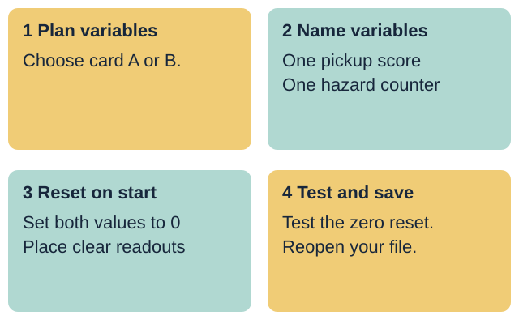
Your response: Choose one variable skill to practise today.
Introduce the Autumn 2 continuation of the two-level maze project for the unit award. All variable names and rules come from supplied made-up project cards A and B. Keep personal names, places and external account details out of the task.
Where does your player sprite start?
How does your start script reset the maze?
Where do you save your project file?
Choose made-up project card A or B today.
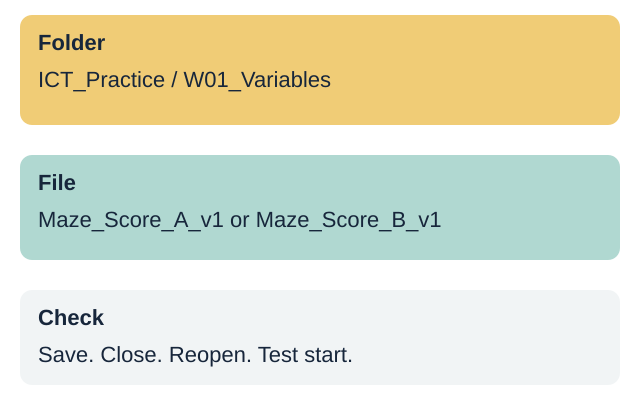
Your response: Show or explain how your maze resets on start.
Retrieve the Autumn 1 maze routine: agreed folder, useful file name, start-position reset, save, close and reopen check. If a pupil's Autumn 1 maze file is absent, open the clean two-level starter maze file from the practice folder.
Look at Project A and Project B. Which start script gives a fair fresh start?
Project B is fair because both score variables reset to zero when the start event runs.
Without a reset block, old points stay on screen from the last turn.
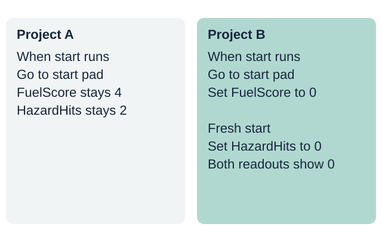
Your response: Choose a project and explain why it is fair.
Compare a start script that leaves old scores untouched with one that resets both score variables to zero on start. Explain that initialising variables on start gives every player a fair turn.
Give each score variable a name that matches its job.
Create one variable for pickups and one for hazards.
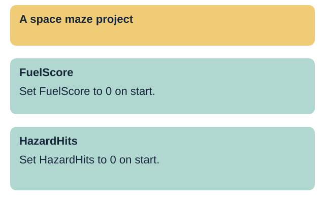
Your response: Point to the two variable names on the model.
Demonstrate making two variables in the block editor using Card A: FuelScore and HazardHits. Show how clear names tell anyone reading the script what each number tracks. Avoid vague names such as number1 or var.
Place two set-to-zero blocks directly under the start event.
Keep the variable readouts away from the maze walls.
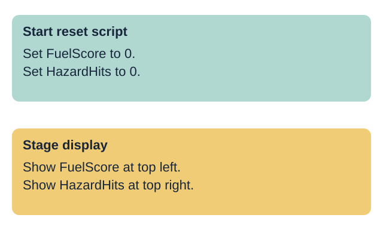
Your response: Point to the two blocks that reset the scores.
Model attaching set FuelScore to 0 and set HazardHits to 0 directly under the start hat block on the player sprite. Drag the two stage readouts to the top corners so the start pad and maze walls stay visible.
variable: a named store for a value that can change
initialise: set a starting value when the project begins
reset: return a value to zero for a fresh start
readout: the box on stage that shows a variable value
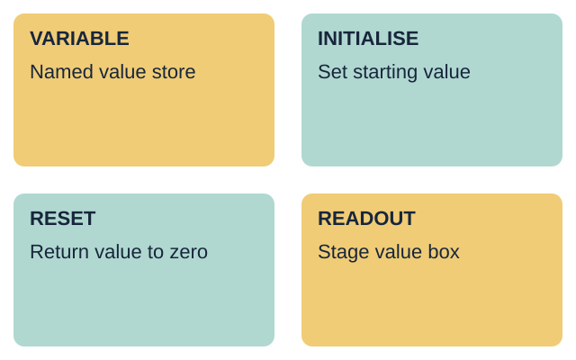
Your response: Explain one word using the model script.
Teach the four terms with the model script and stage view. Connect initialise and reset to the two set-to-zero blocks under the start event.
Set FuelScore to 0. Set HazardHits to 0.
Show FuelScore at top left. Show HazardHits at top right.
Start reset: set FuelScore to 0; set HazardHits to 0.
Stage display: show FuelScore at top left; show HazardHits at top right.
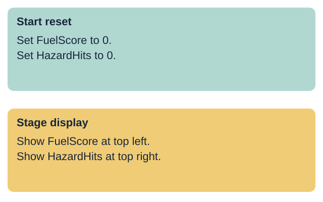
Your response: Match each pair of rules to its setup step.
Use Space maze card A. The two set-to-zero blocks belong under Start reset. The two readout positions belong under Stage display. Allow pointing or sorting printed cards before building the script.
Change one variable to 5, then trigger start. Does it return to 0?
Can the player see the start zone and both readouts clearly?
Both readouts must return to 0 every time the start event runs.
Move a readout box if it covers the start zone or a maze wall.
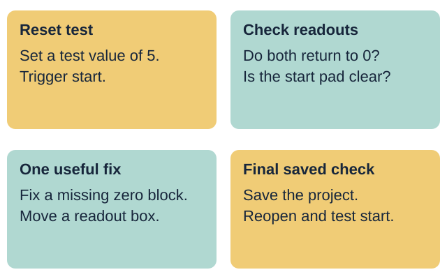
Your response: Give one useful fix after the reset test.
Model a deliberate test: temporarily set a variable to 5, trigger the start event, and verify that both readouts return to 0. Check that neither readout covers the start zone or finish target.
Supported: use the variable name and reset frame.
Independent: create and reset both score variables.
Aspire: add a round counter that starts at one.
Each person saves and checks their own project file.
Your response: Choose a route and set up your variables.
Slides 10-13 share this 12-minute task time. Each pupil updates their own maze file. A shared device uses six-minute turns: Card A then Card B, with builder and tester roles. Keep the focus on naming and resetting two variables.
Choose made-up project card A or card B.
Create the two named variables on your card.
Attach two set-to-zero blocks to the start event.
Place both readouts at the top with help.
Save, reopen and test the start reset.
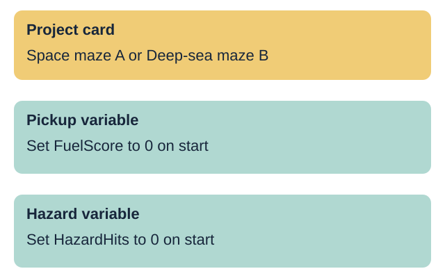
Your response: Show your two variables and their zero values.
Use the editable route page as a planning frame. Provide one step at a time or exact scribing for variable names, then record that support. The pupil selects the blocks and runs the start reset test.
Choose project card A or B and create both variables.
Attach both set-to-zero blocks to the start script.
Place both stage readouts clear of the maze path.
Test the reset by setting a test number and restarting.
Save your file, then reopen it to check.
Your response: Ask your partner to test your start reset.
The pupil uses the chosen project card to create and initialise both variables on the player sprite. Save in the agreed Week 1 folder under Maze_Score_A_v1 or Maze_Score_B_v1 with the software's native extension.
Complete the Independent task first.
Add the third variable from your card for the round count.
Set the round variable to 1 under the start event.
Ask a partner to test all three readouts on start.
Save a new version and explain one change.
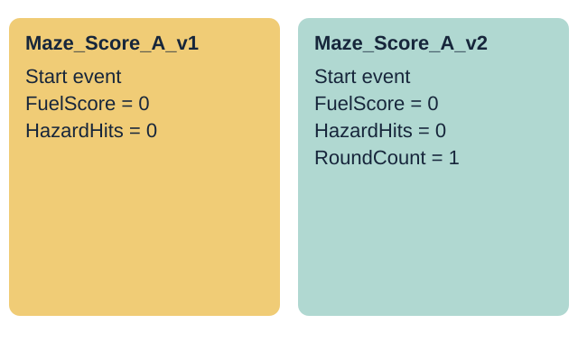
Your response: Show how all three variables initialise on start.
Use the card's stretch rule to add RoundCount (Card A) or DiveCount (Card B) initialised to 1 on start. Save a separate v2 copy and retain v1. Explain why a round counter starts at 1 while scores start at 0.
My file name is ...
My pickup variable is ...
My hazard variable is ...
I changed ... because ...
I reopened the saved file and tested the reset.
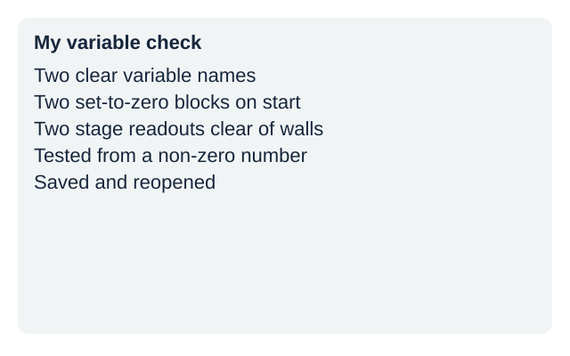
Your response: Record your own variable names and the help used.
Observe two named variables, two set-to-zero blocks attached to start, clear readout placement and reopen result. Record actual prompts or scribing. One next-step prompt is followed by the pupil's response and an adult acknowledgement. Do not prefill pupil codes or success boxes.
Show your two variables and your start reset blocks.
Explain why both scores must reset to zero on start.
Open your saved file and run the start check.
Your response: Show your project and give one reason.
Three minutes for individual checks, two for feedback and close. Check the saved file, not just the open draft. Week 2 updates scores from two maze events. Week 7 is the assessing lesson; this week is formative.